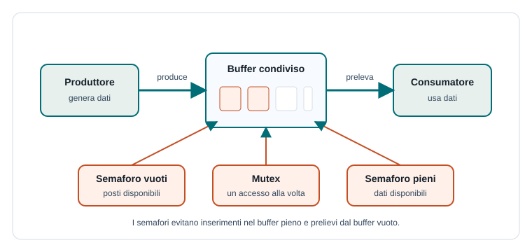

Capitoletto 3
Sincronizzazione
Sincronizzare significa coordinare attività concorrenti: decidere chi può entrare in una sezione critica, chi deve aspettare, quando una condizione è vera e come evitare blocchi permanenti.
Obiettivi della lezione
- Capire perché la sincronizzazione è necessaria nei programmi concorrenti.
- Distinguere lock, mutex e semaforo.
- Leggere semplici pseudocodici con acquisizione e rilascio.
- Riconoscere deadlock, starvation e attese attive.
- Applicare il modello produttore-consumatore a un buffer condiviso.
Che cosa vuol dire sincronizzare
In un programma concorrente alcune attività possono procedere liberamente, mentre altre devono rispettare un ordine. La sincronizzazione serve a imporre queste regole temporali: "entra solo se la risorsa è libera", "aspetta finché ci sono dati", "avvisa quando hai terminato".
Senza sincronizzazione si rischiano race condition; con una sincronizzazione progettata male si rischiano rallentamenti o blocchi. L'obiettivo è trovare un equilibrio: proteggere ciò che serve, lasciando libero il resto del lavoro.
Lock e mutex
Un lock è un meccanismo che permette a un'attività di bloccare l'accesso a una risorsa. Un mutex, cioè mutual exclusion, è un lock pensato per garantire che una sola attività alla volta esegua una sezione critica.
acquisisci(lock)
// sezione critica
aggiorna_dato_condiviso()
rilascia(lock)Il rilascio è essenziale. Se un thread acquisisce un lock e non lo libera più, gli altri thread che lo aspettano restano bloccati. Nei linguaggi moderni spesso si usano costrutti che rilasciano automaticamente il lock anche in caso di errore.
Semafori
Un semaforo è una variabile speciale gestita con operazioni atomiche. Serve a controllare l'accesso a una o più risorse disponibili. Se il valore del semaforo è zero, chi prova a entrare deve aspettare; se è positivo, può procedere e il valore viene diminuito.
| Operazione | Significato | Effetto |
|---|---|---|
wait() | Richiede una risorsa o una condizione. | Se possibile diminuisce il semaforo, altrimenti mette in attesa. |
signal() | Libera una risorsa o segnala un evento. | Aumenta il semaforo e può svegliare un'attività in attesa. |
Un semaforo binario assume valori 0 o 1 ed è simile a un mutex. Un semaforo contatore può rappresentare più risorse uguali, per esempio cinque connessioni disponibili.
Produttore e consumatore
Il problema produttore-consumatore è un modello classico: un'attività produce dati e li inserisce in un buffer; un'altra li preleva e li elabora. Il produttore deve fermarsi se il buffer è pieno, il consumatore deve aspettare se è vuoto.

Produttore:
wait(vuoti)
wait(mutex)
inserisci_dato_nel_buffer()
signal(mutex)
signal(pieni)
Consumatore:
wait(pieni)
wait(mutex)
preleva_dato_dal_buffer()
signal(mutex)
signal(vuoti)Deadlock
Un deadlock si verifica quando più attività restano bloccate perché ognuna aspetta una risorsa trattenuta da un'altra. È una situazione grave: il sistema non avanza, anche se nessun singolo thread sta "sbagliando" da solo.
| Condizione | Descrizione | Esempio |
|---|---|---|
| Mutua esclusione | Almeno una risorsa può essere usata da una sola attività. | Una stampante fisica. |
| Possesso e attesa | Un'attività possiede una risorsa e ne aspetta un'altra. | A ha il file e chiede la stampante. |
| Nessuna prelazione | La risorsa non viene tolta con forza a chi la possiede. | Il lock resta al thread che lo ha preso. |
| Attesa circolare | Si forma una catena chiusa di attese. | A aspetta B e B aspetta A. |
Per prevenire il deadlock si può imporre un ordine fisso di acquisizione delle risorse, usare timeout, evitare di trattenere risorse mentre si attende o progettare il sistema in modo da eliminare una delle condizioni necessarie.
Starvation e attesa attiva
La starvation si verifica quando un'attività resta pronta ma non ottiene mai la risorsa necessaria, perché altre attività vengono sempre servite prima. Non è un blocco circolare come il deadlock, ma può comunque impedire il completamento del lavoro.
L'attesa attiva, o busy waiting, avviene quando un'attività controlla continuamente una condizione consumando CPU. In alcuni sistemi a basso livello può essere accettabile per attese brevissime; nelle applicazioni comuni è meglio usare meccanismi che sospendono il thread finché non arriva un segnale.
Esempio guidato: coda di stampa
Una coda di stampa riceve documenti da più utenti. La stampante può eseguire un lavoro alla volta, quindi la coda protegge l'ordine dei documenti. Gli utenti inseriscono richieste; il servizio di stampa le preleva una per volta.
- Gli utenti producono richieste di stampa.
- La coda è il buffer condiviso.
- Un lock protegge inserimenti e prelievi dalla coda.
- Un semaforo può indicare quante stampe sono in attesa.
- Il servizio consumatore attende quando la coda è vuota.
Esercizi guidati
- Scrivi lo pseudocodice per proteggere l'aggiornamento di un saldo condiviso con un lock.
- Spiega perché il produttore deve attendere quando il buffer è pieno.
- Disegna una situazione di deadlock con due attività e due risorse.
- Indica una strategia per evitare l'attesa circolare.
Domande con risposta semplice
Che differenza c'è tra mutex e semaforo?
Un mutex protegge l'accesso esclusivo a una risorsa. Un semaforo può anche contare più risorse o segnalare condizioni tra attività.
Perché il deadlock è difficile da vedere?
Perché dipende dall'ordine temporale delle operazioni. Può comparire solo in alcune esecuzioni, quando le attività si incastrano in una particolare sequenza.
Che cosa fa l'operazione signal()?
Indica che una risorsa è stata liberata o che una condizione è diventata vera, permettendo eventualmente a un'attività in attesa di ripartire.
Per ripassare
Sincronizzare significa controllare gli accessi e le attese. Devi saper collegare ogni strumento al problema che risolve: mutex per mutua esclusione, semaforo per risorse contate o segnali, ordine fisso per prevenire deadlock.